Introducción al Tenis de Mesa
El tenis de mesa es mucho más que un deporte; es una pasión que combina velocidad, precisión y estrategia. Con raíces que se remontan a finales del siglo XIX, este dinámico juego se ha convertido en una disciplina olímpica, conquistando a millones de aficionados alrededor del mundo.
Cada partido es una emocionante batalla en la que la coordinación, el reflejo y la táctica juegan un papel fundamental. Ya sea en competiciones de alto nivel o en encuentros recreativos, el tenis de mesa desafía tus habilidades físicas y mentales, permitiéndote mejorar tu concentración y rapidez de reacción.
Lo mejor del tenis de mesa es su accesibilidad: es un deporte ideal para todas las edades y niveles de experiencia. Desde jóvenes talentos hasta adultos en busca de una actividad divertida y saludable, el tenis de mesa fomenta la socialización y el bienestar.
Curiosidades
Descubre datos sorprendentes sobre este deporte, desde récords impresionantes hasta hechos poco conocidos.
Leer más
Historia
Desde sus orígenes en el siglo XIX hasta convertirse en un deporte olímpico, el tenis de mesa ha evolucionado constantemente.
Leer másJugadores
Conoce a las leyendas del tenis de mesa que han marcado la historia con su talento y logros.
Leer másReglas Básicas del Tenis de Mesa
El tenis de mesa, o ping-pong, es un deporte rápido y emocionante. Conoce las reglas fundamentales para disfrutar de un juego justo y divertido:
1. Inicio del Juego
- Se decide quién saca mediante un sorteo.
- El saque se realiza desde detrás de la línea de fondo.
- La pelota debe botar en el lado del jugador que saca y luego en el del oponente.
2. Puntuación
- Se juega a 11 puntos por set.
- Se debe ganar por una diferencia de 2 puntos.
- Los partidos se juegan al mejor de 3, 5 o 7 sets.
3. Reglas del Saque
- El saque debe lanzarse lo más verticalmente posible, a una altura no mínima a 16cm y de manera que la pelota bote en el lado propio antes de cruzar la red.
- Si la pelota toca la red y cae correctamente, se repite el saque.
- Cada jugador debe sacar dos veces antes de hacer el cambio. Cuando se llega al 10-10, cada jugador tiene un saque.
4. Pelota y Raqueta
- La pelota es de 40 mm de diámetro y, desde 2014, se fabrica en plástico.
- Las raquetas son de madera con una capa de goma para mejorar el control y el efecto.
5. Intercambio de Golpes
- La pelota debe ser golpeada antes de que bote dos veces en el mismo lado.
- La pelota puede pasar al otro lado por encima, por un lado o por abajo de la red.
- El punto se pierde si no se devuelve la pelota correctamente.
Para mayor información, verifica el reglamento oficial en Reglamento Oficial del Tenis de Mesa.
Equipamiento de Tenis de Mesa
Raquetas
Las raquetas son esenciales para el rendimiento en el juego. Están disponibles en diferentes materiales y diseños según el nivel de juego.
Pelotas
Las pelotas de tenis de mesa son ligeras y de 40mm de diámetro. Las de competición tienen 3 estrellas, mientras que las de entrenamiento suelen tener una estrella.
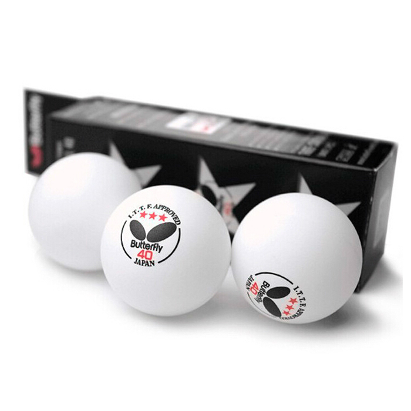Mesas
Las mesas oficiales deben cumplir con especificaciones de la ITTF. Las mesas de entrenamiento son más accesibles y variadas en tamaño y calidad.
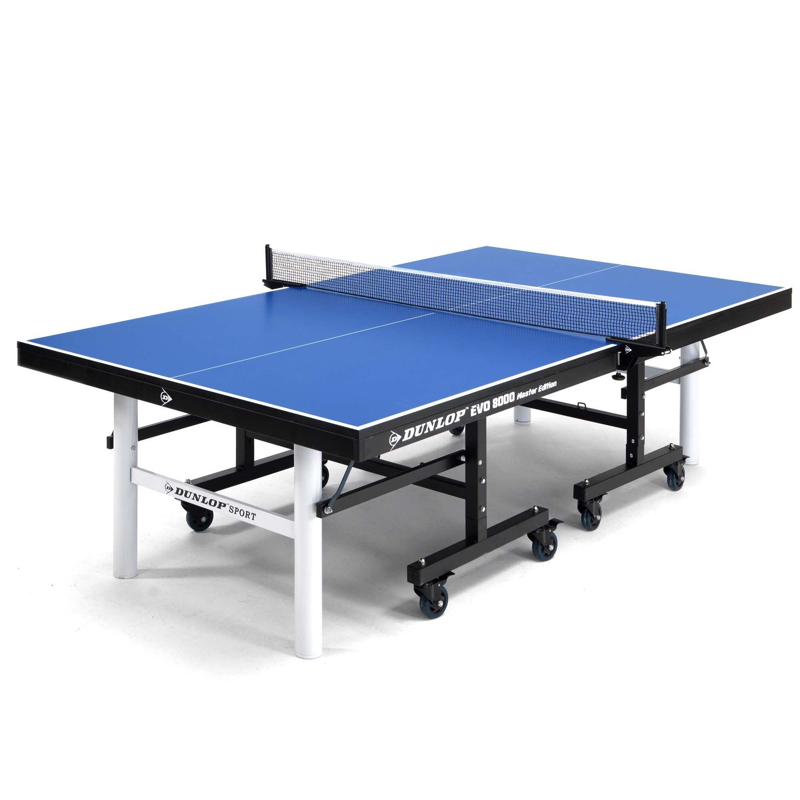Redes y postes
Las redes deben ser de 15,25 cm de altura, y los postes que sostienen la red deben estar fijados a los extremos de la mesa.
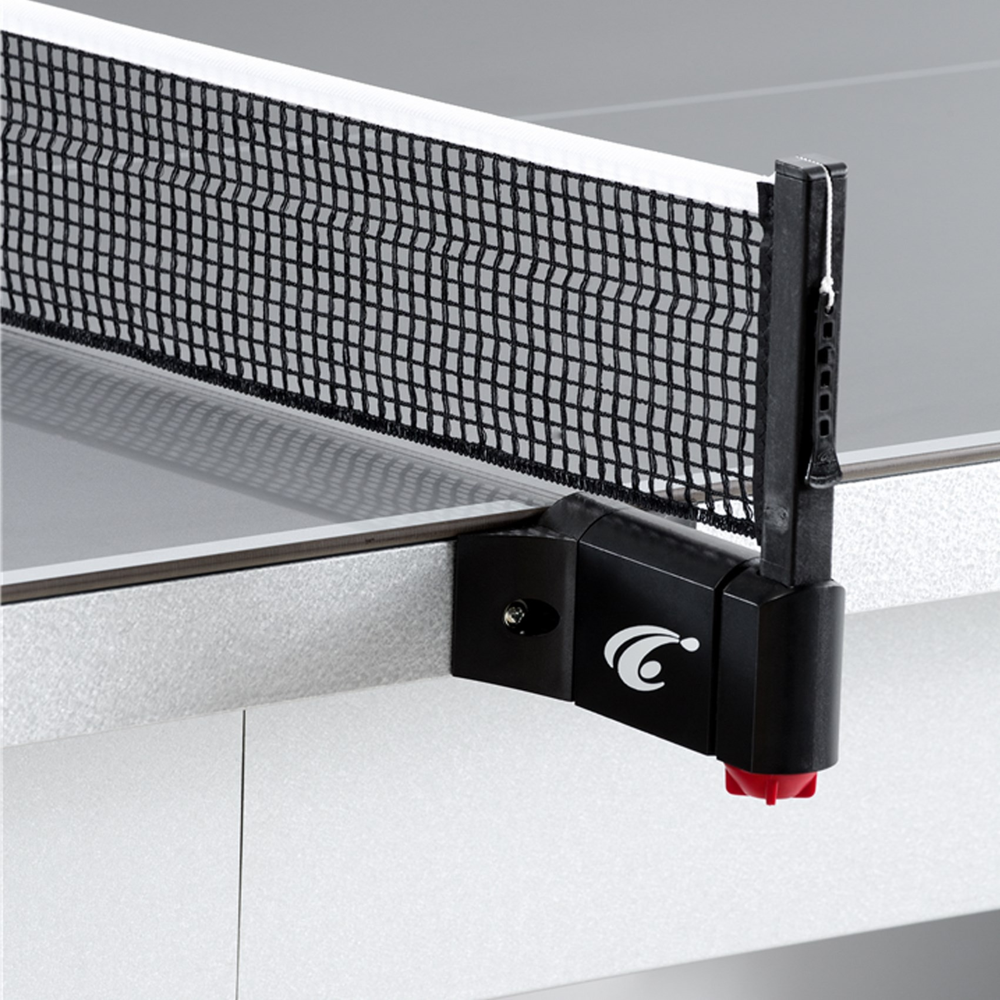Marcadores
Los sistemas de marcadores se utilizan para llevar la cuenta de los puntos durante los partidos.
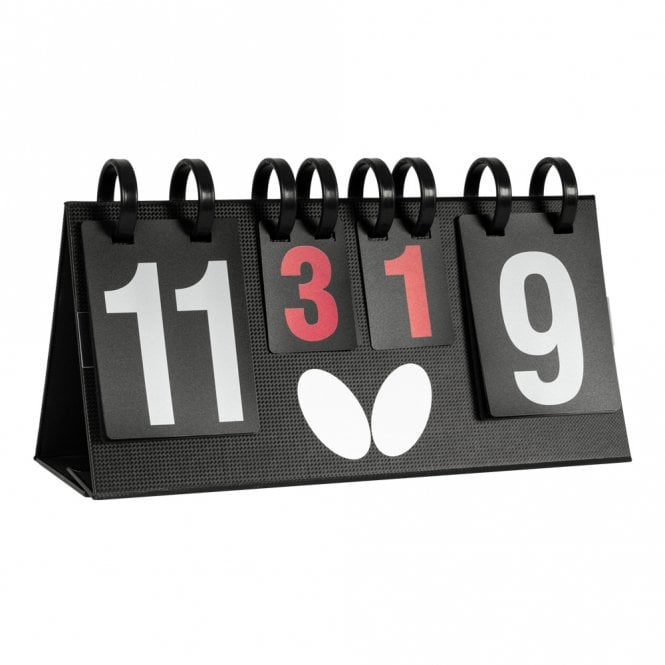Zapatillas
Las zapatillas para tenis de mesa tienen una suela antideslizante y ofrecen soporte adecuado para los movimientos rápidos y constantes en la cancha.
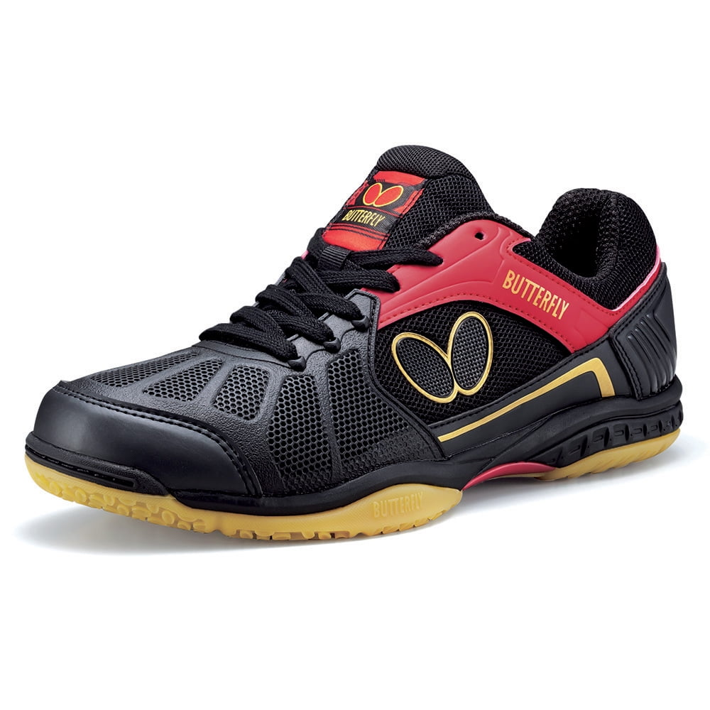Accesorios
Los accesorios adicionales como fundas para las raquetas, toallas y bolsas de deporte son fundamentales para mantener todo el equipo en buen estado.
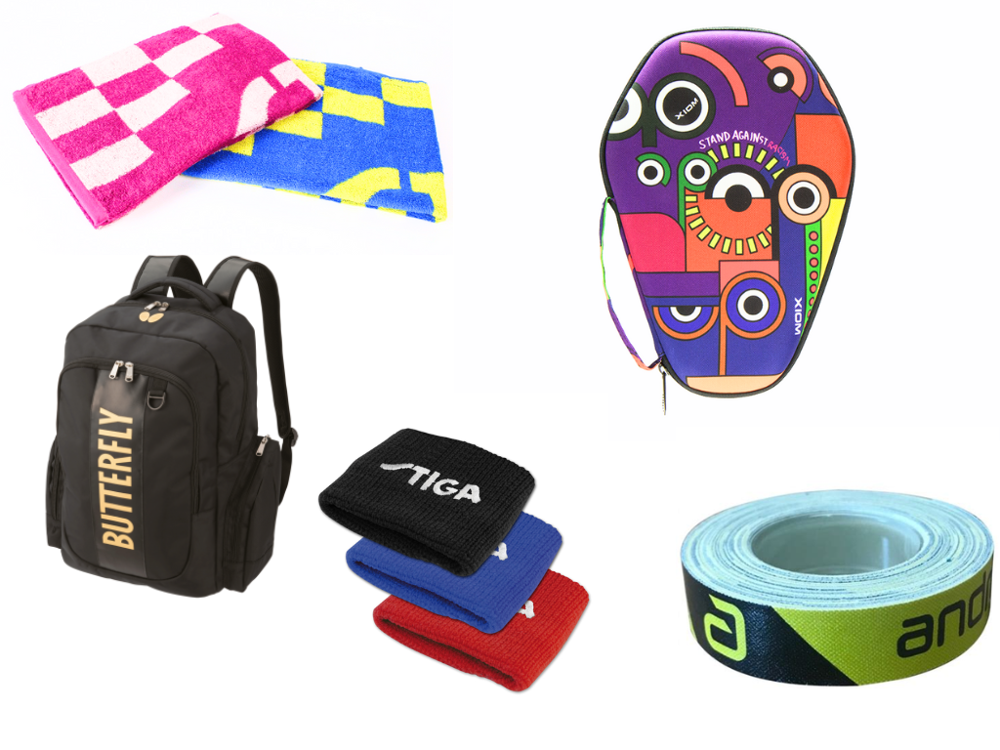Ropa
La ropa diseñada para tenis de mesa es ligera y transpirable, permitiendo el máximo confort y movilidad.
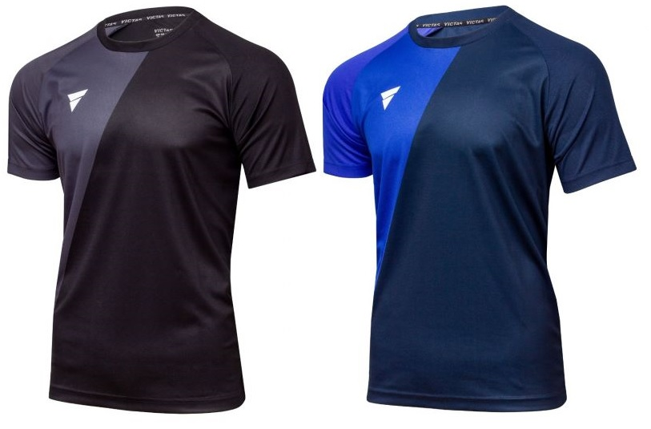Técnicas de Tenis de Mesa
Revés y Drive
El revés y el drive son dos de los golpes más básicos pero fundamentales. El drive se utiliza para un golpe rápido y recto, mientras que el revés es ideal para cambiar la dirección del juego.
Topspin
El topspin es un golpe que genera un giro hacia adelante en la pelota, lo que le da más control y profundidad. Es esencial para mantener el ritmo del juego a tu favor.
Bloqueo
El bloqueo es una técnica defensiva que te permite neutralizar los golpes rápidos del oponente. Se usa principalmente cuando el oponente tiene un ataque fuerte y necesitas contrarrestarlo con precisión.
Saque
El saque es uno de los momentos más importantes del tenis de mesa. Un saque bien ejecutado puede poner al oponente en una posición incómoda desde el inicio del punto.
Flick
El flick es un golpe avanzado que se utiliza para devolver pelotas cortas o bajas. Permite un golpe rápido y preciso, ideal para situaciones de juego más intensas.
Variaciones de Spin
El spin es una técnica crucial en el tenis de mesa. Puedes aplicar backspin, sidespin y topspin dependiendo de la estrategia que desees ejecutar.
Aprende más sobre las Técnicas de Tenis de Mesa
Jugadores Destacados
Jan-Ove Waldner
Apodado "El Mozart del tenis de mesa", campeón olímpico en 1992 y múltiple campeón mundial. Reconocido por su elegancia y destreza.
Kong Linghui
Oro olímpico en 1996 y campeón mundial, destacado por su habilidad técnica y juego inteligente.
Liu Guoliang
Campeón olímpico en 1996, considerado una de las figuras clave del tenis de mesa chino.
Deng Yaping
4 medallas olímpicas y varios títulos mundiales, una de las jugadoras más dominantes de la historia.
Zhang Yining
4 títulos olímpicos y múltiples títulos mundiales, considerada una de las jugadoras más exitosas de la historia.
Wang Hao
2 medallas olímpicas y campeón mundial, conocido por su gran técnica y habilidades tácticas.
Zhang Jike
2 títulos olímpicos (2012, 2016) y 3 títulos mundiales, reconocido por su estilo agresivo y explosivo.
Ma Long
3 títulos olímpicos en individuales (2016, 2020) y múltiples títulos mundiales, considerado el mejor jugador de todos los tiempos.
Timo Boll
Líder europeo con múltiples títulos europeos y medallas en Mundiales, gran referente fuera de China.
Xu Xin
Dominante en el circuito mundial, con múltiples títulos de Copa del Mundo y mundial por equipos.
Liu Shiwen
Una de las mejores jugadoras femeninas con varios títulos mundiales y liderando el tenis de mesa femenino.
Chen Meng
Considerada una de las mejores jugadoras de la era moderna, ganadora de varios campeonatos mundiales.

Ding Ning
2 títulos olímpicos (2012, 2016) y campeona mundial en varias ocasiones, destacada por su consistencia.
Mima Ito
Una de las jugadoras más jóvenes en llegar a lo más alto, con títulos mundiales y medallas olímpicas.
Historia del Tenis de Mesa
Orígenes en Inglaterra
Nació en Inglaterra como una variante del tenis, jugado en interiores por la aristocracia británica. Inicialmente, se usaban objetos domésticos como paletas y redes.
Primeros intentos de comercialización
David Foster patentó el primer juego de tenis de mesa, pero no tuvo éxito debido a las pelotas de goma.
Popularización y registro del nombre "Ping-Pong"
Se popularizó con la fabricación de equipamiento especializado. La empresa J. Jaques & Son Ltd. registró el nombre "Ping-Pong". El deporte se expandió a Europa y Asia.
Fundación de la ITTF y primer Campeonato Mundial
Se fundó la ITTF y se establecieron reglas oficiales. Se celebró el primer Campeonato Mundial en Londres.
Innovaciones en el deporte
Se introdujeron técnicas de giro y raquetas con goma y esponja. Hungría dominó el deporte con jugadores como Viktor Barna.
Primer dominio asiático
China comenzó su dominio con la victoria de Rong Guotuan. Japón destacó en los 60 con Ichiro Ogimura.
Diplomacia del "Ping-Pong"
El tenis de mesa tuvo un papel clave en la diplomacia entre EE.UU. y China durante la Guerra Fría, cuando el equipo estadounidense fue invitado a China para una serie de partidos amistosos.
Primera aparición en los Juegos Olímpicos
Debutó en los Juegos Olímpicos de Seúl como deporte de exhibición.
Oficialización como deporte olímpico
Se oficializó como deporte olímpico en Barcelona, con categorías individuales y dobles.
Cambios en las reglas y tamaño de la pelota
Para hacer el juego más dinámico, la ITTF aumentó la pelota a 40 mm, redujo los sets a 11 puntos y prohibió el saque escondido.
Cambio de pelotas de celuloide a plástico
Se cambiaron las pelotas de celuloide por plástico, afectando la velocidad y el bote del juego.
Creación de la World Table Tennis (WTT)
La World Table Tennis (WTT) fue lanzada por la ITTF para modernizar y dar mayor visibilidad al deporte. La WTT organiza los principales torneos internacionales y tiene como meta hacer el deporte más profesional y emocionante.
Debut del dobles mixto en Tokio 2020
Se agregó el dobles mixto como nueva categoría olímpica, con Japón ganando el oro y rompiendo la hegemonía china en esta modalidad.
Digitalización y Expansión Global
La ITTF y la WTT han promovido la digitalización del tenis de mesa, mejorando las transmisiones en vivo y utilizando tecnología avanzada para optimizar el arbitraje y el análisis del rendimiento de los jugadores, expandiendo así su audiencia global.
Curiosidades sobre el Tenis de Mesa
Origen del tenis de mesa
El tenis de mesa, también conocido como ping-pong, se originó en Inglaterra a finales del siglo XIX como una versión en miniatura del tenis.
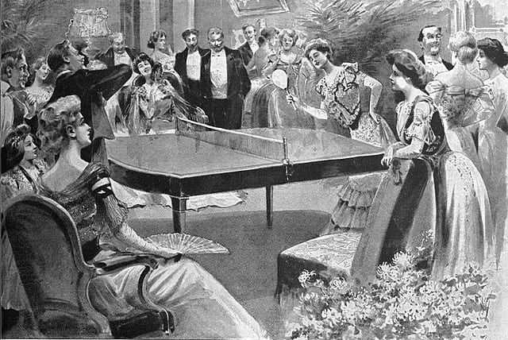Primeras pelotas
Las primeras pelotas eran hechas de corcho o madera, pero rápidamente se cambió a celuloide debido a su ligereza y resistencia. Actualmente son de plástico
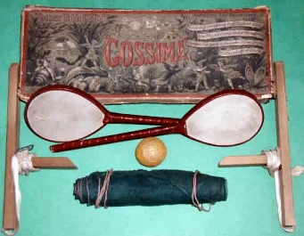Juego olímpico
El tenis de mesa hizo su primera aparición en los Juegos de Seúl en 1988,como deporte de exhibición. En Barcelona 1992 se convirtió en deporte olímpico

El ping-pong como nombre
El término "ping-pong" proviene del sonido que hace la pelota ('ping' cuando la pelota golpea la superficie y 'pong' al rebotar) y es una marca registrada en algunos países.
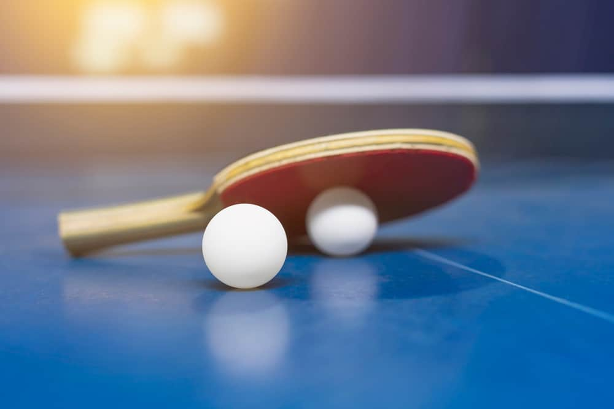La mayor victoria
El partido más largo de tenis de mesa registrado duró 8 horas y 40 minutos en 2016, en un torneo en Alemania.
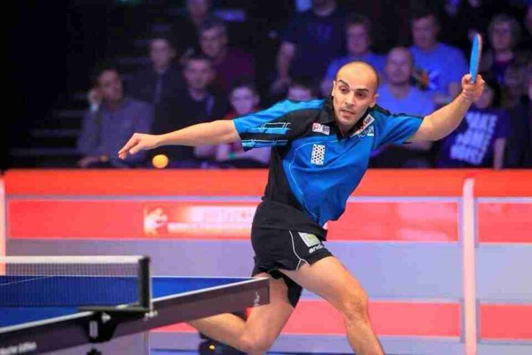El dominio chino
China es la nación más dominante, ganando más del 60% de las medallas en campeonatos mundiales y olímpicos.
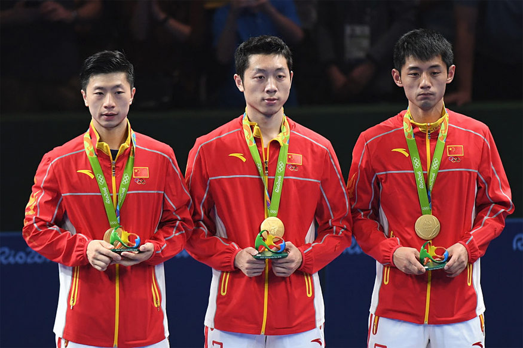El tamaño de la mesa
Una mesa de tenis de mesa oficial mide 2.74 metros de largo, 1.525 metros de ancho y 76 cm de altura.
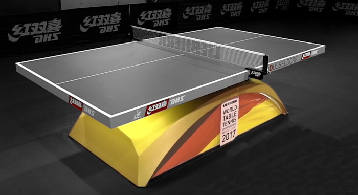El spin en el juego
El "spin" es un tipo de efecto que los jugadores le dan a la pelota, haciendo que cambie su trayectoria de forma impredecible.
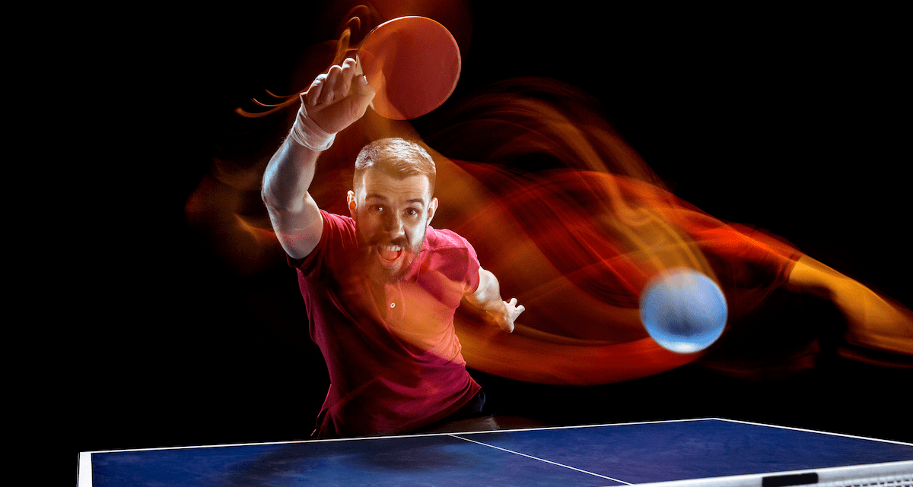El tenis de mesa en China
El tenis de mesa es considerado el deporte nacional en China, donde es una pasión que abarca todas las edades, desde los niños en las escuelas hasta los profesionales.
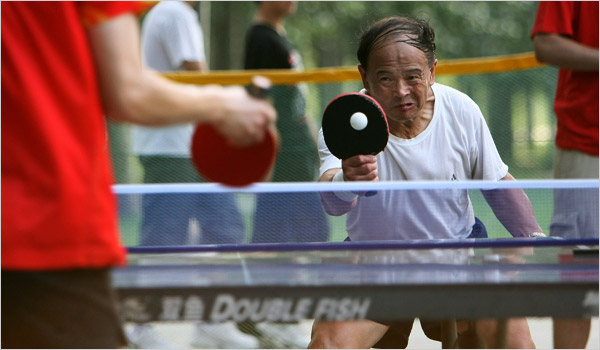La concentración
El tenis de mesa es conocido por su rapidez y requiere una gran concentración y reflejos debido a la velocidad de la pelota (aprox. 70 a 80 km/h).
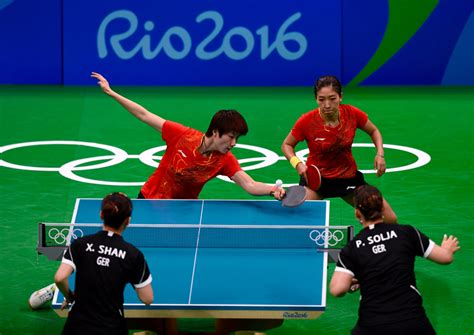Ejercicio para el cerebro
Se ha demostrado que el tenis de mesa tiene beneficios para el cerebro, especialmente en la prevención y tratamiento de enfermedades como el Alzheimer.
Deporte para discapacitados
El tenis de mesa es un deporte accesible para personas con discapacidades, y es uno de los deportes más practicados en los Juegos Paralímpicos.
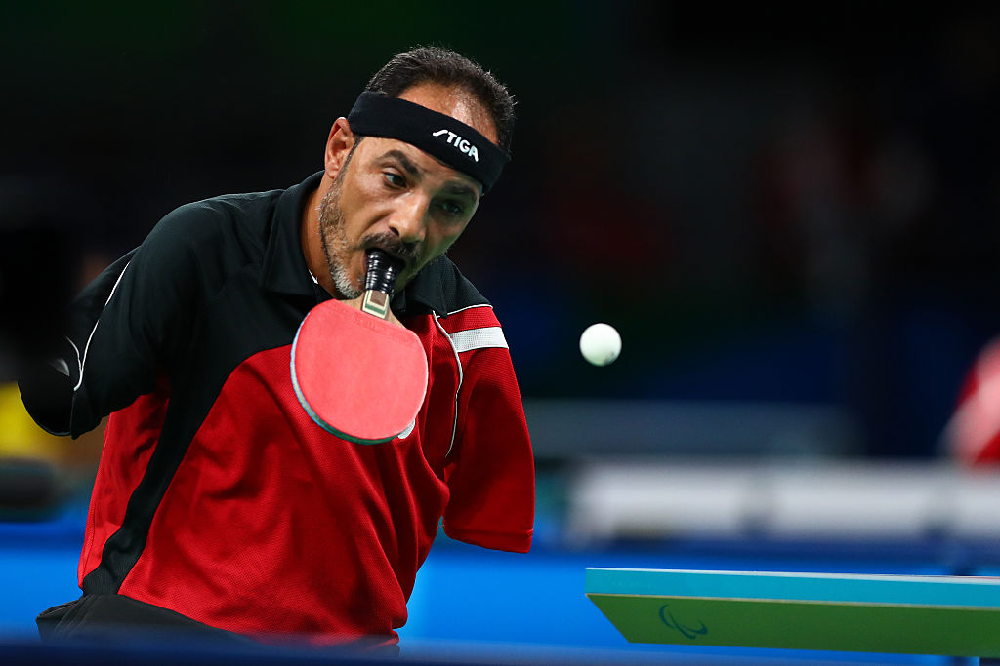